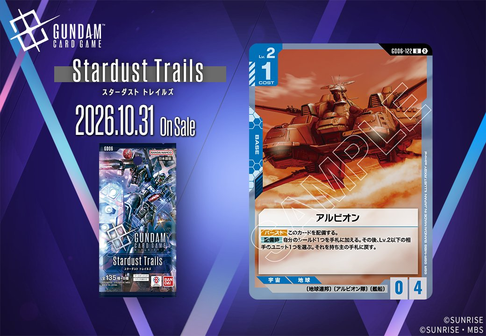
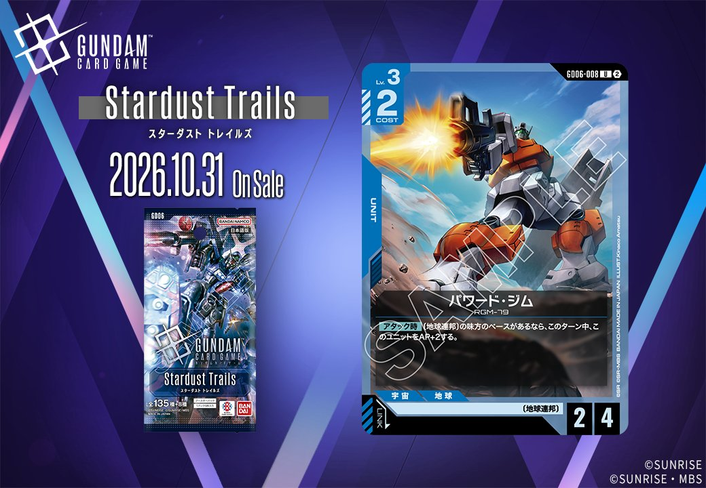

今回は拡張パック「Stardust Trails(スターダスト トレイルズ)」より、青のカード2枚を紹介します。青/BASEの「アルビオン (GD06-122)」と、（地球連邦）とのリンクを持つ青/UNITの「パワード・ジム (GD06-008)」で、いずれも発売日は2026年10月31日です。

アルビオン (GD06-122)
| 色 | 青 | タイプ | BASE |
| Lv | 2 | コスト | 1 |
| AP | 0 | HP | 4 |
| 特徴 | 〔地球連邦〕、〔アルビオン隊〕、〔艦船〕 | ||
効果: 【バースト】このカードを配備する。【配備時】自分のシールド1つを手札に加える。その後、Lv.2以下の相手のユニット1つを選ぶ。それを持ち主の手札に戻す。
アルビオン(GD06-122)はCOST1・HP4のベースで、【配備時】に自分のシールド1つを手札に加えつつLv.2以下の相手ユニット1つを持ち主の手札に戻すバウンス効果を持つ。ガンタンクやアンクシャの【配備時】1ダメージと異なり、Lv.2以下を対象に完全に手札へ戻せる点が特徴で、相手のブロッカー除去にも機能する。 また【バースト】でこのカードを配備でき、シールドから割られた際にも配備時効果を能動的に発動できる。リンクはなく、2026-10-31発売のStardust Trails収録。

パワード・ジム (GD06-008)
| 色 | 青 | タイプ | UNIT |
| Lv | 3 | コスト | 2 |
| AP | 2 | HP | 4 |
| 特徴 | 〔地球連邦〕 | ||
| リンク条件 | （地球連邦） | ||
効果: 【アタック時】〔地球連邦〕の味方のベースがあるなら、このターン中、このユニットをAP+2する。
パワード・ジム(GD06-008)はCOST2でAP2/HP4という青のユニットとして堅実なステータスを持ち、【アタック時】に〔地球連邦〕の味方のベースがあればこのターン中AP+2され、実質AP4でアタックできる点が特徴です。リンクに（地球連邦）を持ち、〔地球連邦〕デッキで採用しやすく、ベース展開を前提とすればコスト以上の打点を出せます。2026-10-31発売のStardust Trails収録カードで、ベースを維持できる盤面での運用が鍵になります。
関連カード
-
 アムロ・レイ(ST01-010)青系デッキ内採用率51.9% (2742デッキ)
アムロ・レイ(ST01-010)青系デッキ内採用率51.9% (2742デッキ) -
 ガンダム(ST01-001)青系デッキ内採用率50.1% (2649デッキ)
ガンダム(ST01-001)青系デッキ内採用率50.1% (2649デッキ) -
 ガンタンク(GD01-008)青系デッキ内採用率35.9% (1898デッキ)
ガンタンク(GD01-008)青系デッキ内採用率35.9% (1898デッキ) -
 アンクシャ(GD01-020)青系デッキ内採用率25.5% (1346デッキ)
アンクシャ(GD01-020)青系デッキ内採用率25.5% (1346デッキ) -
 ジム(ST01-005)青系デッキ内採用率24.3% (1283デッキ)
ジム(ST01-005)青系デッキ内採用率24.3% (1283デッキ)